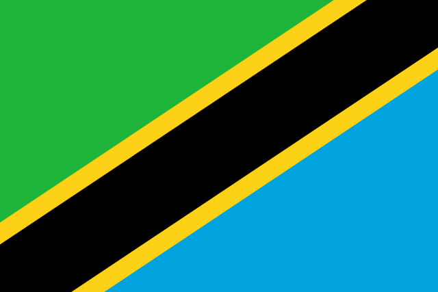
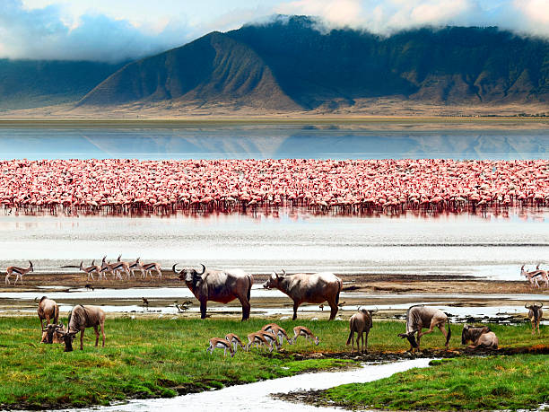
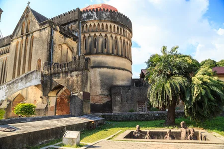
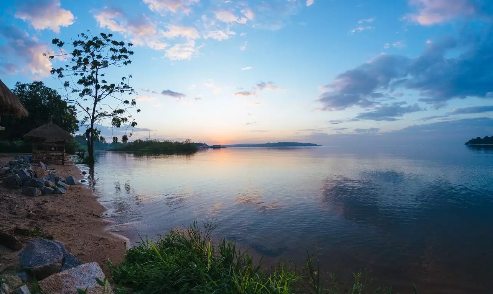
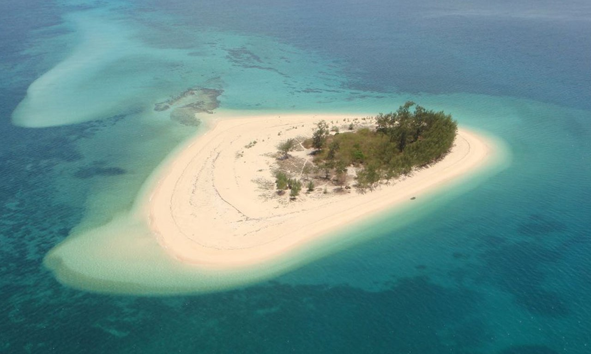
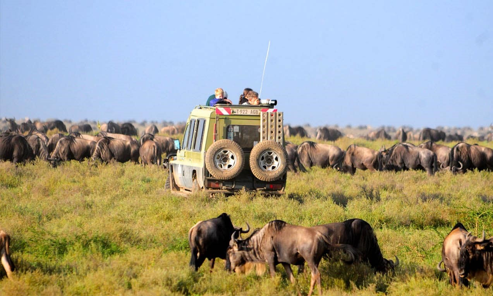

Masivul Kilimandjaro este un munte, un stratovulcan, situat în nord-estul Tanzaniei. Cu toate că masivul muntos se află situat într-o regiune tropical-ecuatorială fierbinte, una din cele mai calde regiuni de pe glob, datorită altitudinii ridicate, pe vârful muntelui există zăpadă permanentă, respectiv un ghețar, care se găsește doar pe muntele Kibo. Din păcate, aceste zone înghețate se micșorează continuu, fapt confirmat de observarea acestor zone prin imagini luate de către sateliți. Motivele aparente sunt clima uscată, săracă în precipitații, și încălzirea globală.
 TANZANIA
TANZANIA| Tanzania este o țară în estul Africii care este mărginită de Kenya și Uganda în nord, Ruanda, Burundi și Republica Democrată Congo în vest și Zambia, Malawi și Mozambic în sud. În partea de est este mărginită de Oceanul Indian. În 1996 oficialitățile guvernamentale au fost transferate din Dar es Salaam la Dodoma, care a devenit astfel capitala politică a țării. Însă, Dar es Salaam rămâne principalul centru comercial. Relieful Tanzaniei este muntos in nord-est, acolo unde este situat Muntele Kilimanjaro, cel mai inalt varf din Africa. La nord si vest se gasesc Marile Lacuri, Lacul Victoria (cel mai mare lac din Africa) si Lacul Tanganika (cel mai adanc lac din Africa, cunoscut pentru speciile unice de peste). Centrul Tanzaniei cuprinde un larg platou cu campii si teren arabil. Tanzania are multe parcuri intinse si importante din punct de vedere ecologic, cu fauna salbatica, incluzand faimosul parc National Ngorongoro Crater, Parcul Serengeti in nord, Parcul National Mikiumi si Selous Game Reserve in sud. |

- Denumirea oficiala: Republica Unită a Tanzaniei
- Fusul orar: UTC+3
- Capitala: Dodoma
- Suprafata: 945,203 km2
- Moneda: șiling tanzan
- Limba oficiala: swahili
- Prefix telefonic international: +255

Zona de conservare Ngorongoro se întinde pe vaste întinderi de câmpii muntoase, savană, păduri de savană și păduri. Înființată în 1959 ca zonă de utilizare a terenurilor multiple, cu fauna sălbatică coexistând cu păstorii maasai care practică pășunatul tradițional pentru animale, include spectaculosul crater Ngorongoro, cea mai mare calderă din lume. Proprietatea are o importanță globală pentru conservarea biodiversității datorită prezenței speciilor amenințate la nivel global, a densității faunei sălbatice care locuiește în zonă și a migrației anuale a gnu, zebre, gazele și alte animale în câmpiile nordice. Cercetările arheologice extinse au dat, de asemenea, o lungă secvență de dovezi ale evoluției umane și ale dinamicii omului-mediu, inclusiv amprente datând de 3,6 milioane de ani.

Stone Town reprezintă partea antică a orașului Zanzibar (sau Unguja Mjini) - capitala insulei Unguja, informal cunoscut sub numele de Zanzibar, o parte din Tanzania. “Orasul de piatra” este construit pe o peninsulă triunghiulară de teren de pe coasta de vest a insulei. Cea mai veche parte a orașului este constituită dintr-un "labirint" de alei înguste care duc spre case, magazine, bazare și moschei. Autoturismele sunt adesea prea largi pentru a conduce pe aceste alei. Arhitectura sa încorporează elemente din stilurile arabe, persiene, indiene, europene și africane.
 Lacul Victoria |
 Insula Mafiei |
 Parcul National Serengeti |

- Inainte de a calatori, e bine sa te vaccinezi impotriva diverselor tipuri de boli comune acolo.
- Impacheteaza niste haine groase, deoarece seara temperaturile scad.
- Nu uita de bacsis- unii angajati chiar ti-l vor cere!